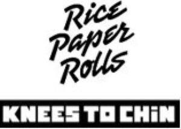

Trade Mark Journal No.2026/010 6 March 2026
WO0000001902718 (29,30,43)
Office of origin: Benelux Office for Intellectual Property (BOIP)
Date of International Registration:24 December 2025
Date of designation in the UK:
24 December 2025

International priority date claimed: 24 June 2025
(Benelux Office for Intellectual Property (BOIP))
(1527602)
- Class 29
- Meat, fish, poultry and game; meat, fish, poultry and game-based preserves; prepared and cooked dishes based on meat, fish, poultry, game; meat extracts; gelatin for food; mussels and crustaceans (not living); prepared and cooked dishes based on with mussels and crustaceans; meat skewers, seafood, namely crustaceans and crustaceans, not living, frozen, preserved, dried, cooked or candied fruits and vegetables; tofu; prepared and cooked dishes based on fruits, vegetables and tofu; fruit salads; vegetable salads; seaweed extracts for food; crystallized ginger; potages; preparations for making soup; soups; broths; vegetable broth; prepared broth, consommés, broth concentrates; soup (miso); jellies, jams, compotes; eggs, milk and dairy products; coconut milk; soy milk; cheeses; butter; edible oils and fats, sesame oil for food; coconut oil and fat for food; coconut powder; soya beans; soybean oil for use in the kitchen; peanuts; processed lemongrass; coconut milk, lemongrass, peanut-based products; dairy beverages.
- Class 30
- Coffee; tea; tea-based beverages; fruit-flavored teas; cocoa, sugar, rice, tapioca, sago, artificial coffee; flour and preparations made from cereals, bread, pastry and confectionery, cakes; fruit cakes; sesame confectionery; sesame paste; viennoiseries, edible ices, ice cream; rice or pasta-based prepared dishes; prepared rice dishes; prepared dishes consisting primarily of rice; prepared dishes mainly based on rice; rice salad; rice vermicelli; steamed rice; steamed bread; spring rolls; sheets for spring rolls; pastry sheets for spring rolls; rice chips; rice crackers; rice cakes; glutinous rice cakes (chapsalttock); cakes based on glutinous rice (mochi); molded rice dough cakes (gyushi); vegetable fried noodles [japchae]; brioche bread rolls; steamed buns filled with minced meat [niku-manjuh]; ravioli; pork dims sums (dumplings); pastry sheets for gyoza dumplings; cooked gyoza (Chinese stuffed dumplings); noodles; noodle-based prepared meals; rice-based prepared meals; rice-based snacks; sauté rice; rice pulp for culinary use; sandwiches; pancakes; filled pancakes; honey, yeast, salt, mustard; vinegar, spices; curry preparations; cooking herbs; aromatic preparations for food; seasonings; ground coriander; dried coriander; sesame seeds (seasonings); condiments; sauces (condiments); sauces for rice; soy sauce, sweet and sour sauces, ginger, wasabi, meat gravies; ready-made or cooked dishes made with the above products.
- Class 43
- Services for providing food and beverages; fast-food services; restaurant services for spring rolls; takeout services (preparation of meals); services provided by restaurants selling take-away meals; fast take-away food and beverage services; catering services; bar, coffee shop, self-service restaurant services; snack bars; hotel services; temporary accommodation; information services relating to restaurants; information services concerning food and beverage preparation.
K2C SPRL
Representative: WIPLAW, Avenue Louise 279, B-1050 Bruxelles, BELGIUM